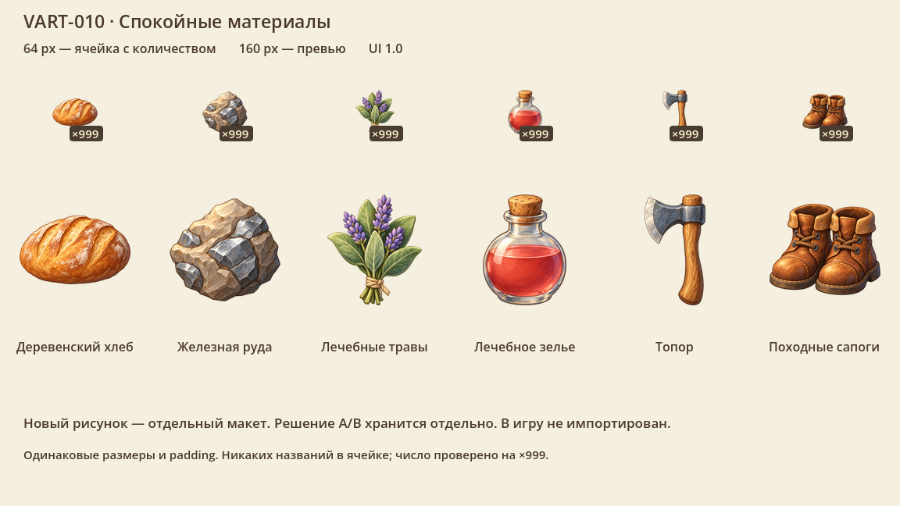

Вещи, которые узнаёшь
с первого взгляда.
Хлеб, руда, лечебные травы, колба, топор и походные сапоги. Два варианта живописной подачи при общей форме предметов: A — спокойные материалы; B — более выраженные мазки и блики. Сравниваем в настоящих 64 и 160 px, прежде чем заказывать весь каталог.


Весь набор показывает выбранный для просмотра вариант; отдельный предмет — текущую иконку и A/B рядом. Галочка включает исходный размер кадра; при выключенной галочке страница уменьшает целый лист для окна. Иконки в нативном PNG сняты 1:1, HUD/UI не увеличен на 120%. Игровой фон — сохранённый статичный эталон VART-008, не живое прохождение. Просмотр A/B не сохраняет художественный выбор.
Два файла для двух задач
Ячейка использует готовую 64 px миниатюру; описание — отдельное 160 px превью. Оба размера получены напрямую из большого мастера с сохранением пропорций, а не увеличением маленькой иконки. Здесь открываются отдельные PNG — это каталог макетов, не реализация игрового кеша.